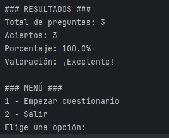

Portfolio de Técnico de Redes
Soy Andres Ferreiro, alumno de SMR (2º). Este portfolio forma parte de la práctica de Lenguaje de Marcas y me servirá como herramienta para mostrar mis trabajos de redes, sistemas y soporte técnico.

Soy Andres Ferreiro, alumno de SMR (2º). Este portfolio forma parte de la práctica de Lenguaje de Marcas y me servirá como herramienta para mostrar mis trabajos de redes, sistemas y soporte técnico.

Diseño de una red LAN para un aula con dividida en VLANs, servicios DHCP y políticas básicas de seguridad.
Creamos la estructura en Packet Tracer y luego montamos la red. Además, creamos un repositorio en GitHub con los ficheros de configuración.
Proyecto lo realizamos el año pasado en SMR2.
Este proyecto fue para la asignatura de MPO del primer año de ASIR en el cual tenia que hacer un menu que diese paso a un test en que que te diria tu nota al final
En este proyecto creamos varias imagenes de windows(clientes) y un Servidor. Configuramos tanto el dominio como varios servicios como DNS. En esta practica teniamos que implementar una infraestructura de red con Active Directory.

Soy Andrés Ferreiro, actualmente soy estudiante de primer año de ASIR y tambien estoy sacandome un master en Ciberseguridad.
Titulos:Titulo de FP de SMR y Bachillerato.
Experiencia:5 años en El Corte Inglés y 1 año en HM Hospitales tras haber hecho las practicas alli.
Idiomas:Ingles nivel C1, frances nivel B1 y Aleman nivel A2.